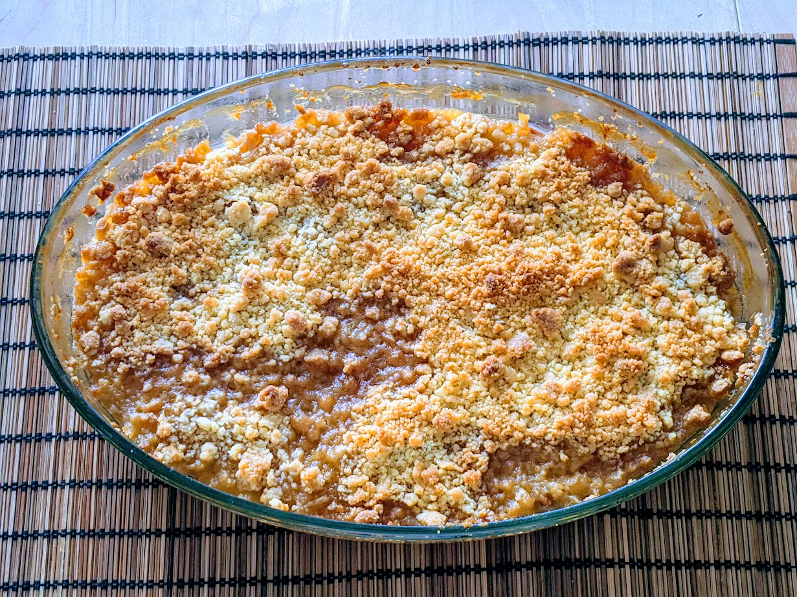

Crumble

Ici, avec des poires et de la rhubarbe à la place des abricots
Pour 6 personnes :
- 1kg d'abricots
- 50g + 120g de sucre (roux de préférence)
- 120g de beurre (DU BEURRE !)
- 150g de farine
- (Facultatif) 50g d'amandes concassées ou effilées
- Faire préchauffer le four thermostat 6 (180°C)
- Beurrer un plat à four, disposer les abricots coupés en 2/4 en tassant bien. Saupoudrer de sucre (50g) et des amandes, si amandes il y a.
- Préparer la pâte à crumble en mélangeant sucre (120g), beurre et farine avec les mains. Comme un gros sac. Il faut qu'il y ait des petits bouts, des gros bouts... Si le mélange est trop "pâteux", rajouter de la farine pour que ça fasse des genre de miettes (enfin du machin à crumble quoi, tu vois bien la consistance que ça doit avoir)
- Disposer lesdites miettes sur les abricots, enfourner pendant 30-40 minutes.
- Sortir du four 5 minutes avant dégustation.
Remarque : En fait, tu peux aussi faire ça avec des pommes, des poires, des kiwis, des pêches, des cerises, enfin avec un peu n'importe quoi en fait.
Retour à la liste des recettes